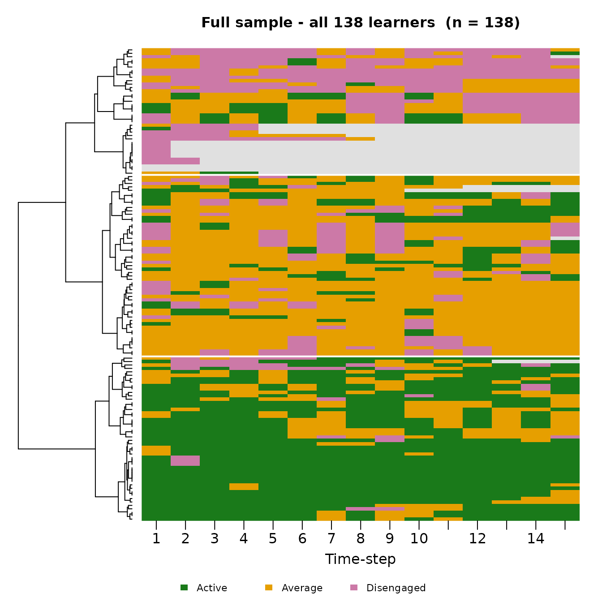
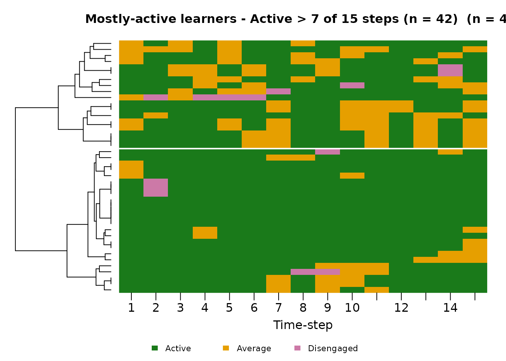
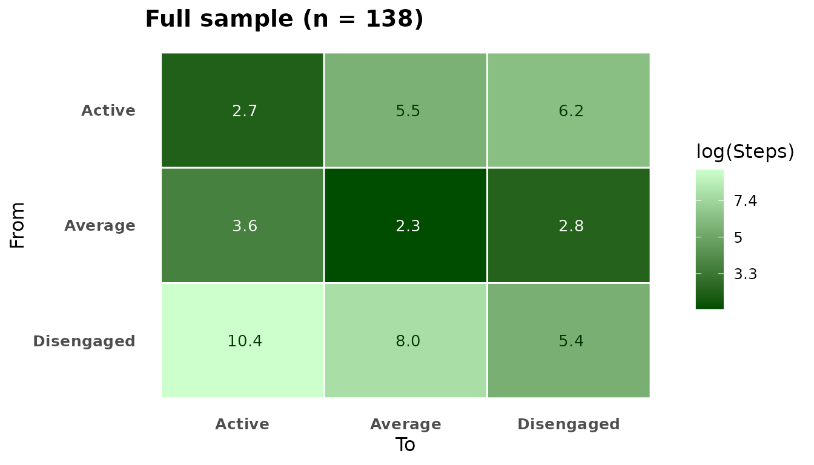
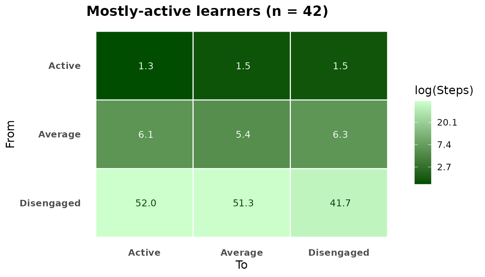
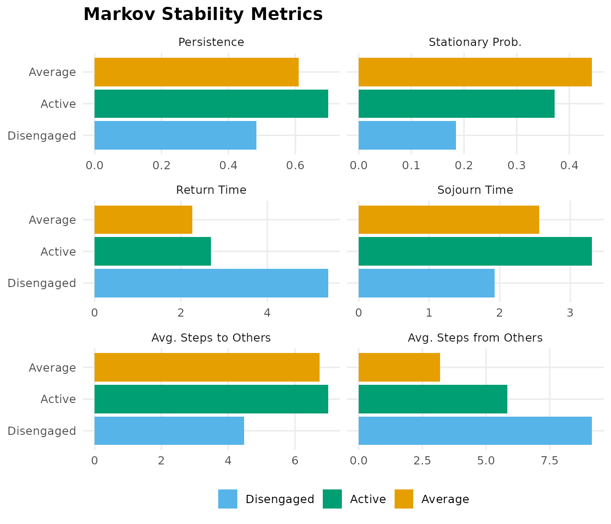
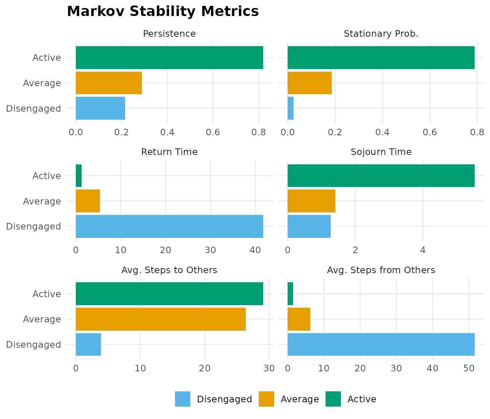

Nestimate provides two functions for Markov-chain stability analysis of transition networks:
-
passage_time()– computes the full matrix of mean first passage times (MFPT). Entry M[i, j] is the expected number of steps to travel from state i to state j for the first time. The diagonal equals the mean recurrence time 1/pi. -
markov_stability()– computes per-state stability metrics: persistence, stationary probability, return time, sojourn time, and mean accessibility.
Both functions accept a netobject,
cograph_network, tna object, row-stochastic
matrix, or a raw wide sequence data frame.
Data
trajectories contains 138 learners recorded at 15
time-steps each with three engagement states: Active, Average, and
Disengaged.
dim(trajectories)
#> [1] 138 15
table(as.vector(trajectories), useNA = "always")
#>
#> Active Average Disengaged <NA>
#> 703 813 354 200Selecting mostly-active learners
We keep learners who were Active more than half the time (> 7 of 15 steps).
df <- as.data.frame(trajectories)
active_count <- rowSums(df == "Active", na.rm = TRUE)
mostly_active <- active_count > ncol(df) / 2
cat(sum(mostly_active), "of", nrow(df), "learners qualify\n")
#> 42 of 138 learners qualify
sub <- df[mostly_active, ]Sequence plots
state_pal <- c(Active = "#1a7a1a", Average = "#E69F00", Disengaged = "#CC79A7")
sequence_plot(
df,
type = "heatmap",
sort = "lcs",
k = 3,
k_color = "white",
k_line_width = 2,
state_colors = state_pal,
na_color = "grey88",
main = "Full sample - all 138 learners",
time_label = "Time-step",
y_label = "Learner",
legend = "bottom"
)
sequence_plot(
sub,
type = "heatmap",
sort = "lcs",
k = 2,
k_color = "white",
k_line_width = 2,
state_colors = state_pal,
na_color = "grey88",
main = "Mostly-active learners - Active > 7 of 15 steps (n = 42)",
time_label = "Time-step",
y_label = "Learner",
legend = "bottom"
)
Transition networks
net_all <- build_network(df, method = "relative")
net_sub <- build_network(sub, method = "relative")
round(net_all$weights, 3)
#> Active Average Disengaged
#> Active 0.698 0.267 0.035
#> Average 0.204 0.610 0.186
#> Disengaged 0.120 0.397 0.483
round(net_sub$weights, 3)
#> Active Average Disengaged
#> Active 0.819 0.164 0.017
#> Average 0.683 0.288 0.029
#> Disengaged 0.643 0.143 0.214In the mostly-active group nearly every state transitions predominantly back to Active, and the probability of entering Disengaged is almost zero.
Mean First Passage Times
pt_all <- passage_time(net_all)
pt_sub <- passage_time(net_sub)
print(pt_all, digits = 2)
#> Mean First Passage Times (3 states)
#>
#> Active Average Disengaged
#> Active 2.69 3.63 10.36
#> Average 5.51 2.26 7.97
#> Disengaged 6.16 2.78 5.41
#>
#> Stationary distribution:
#> Active Average Disengaged
#> 0.3719 0.4431 0.1850
print(pt_sub, digits = 2)
#> Mean First Passage Times (3 states)
#>
#> Active Average Disengaged
#> Active 1.27 6.12 51.99
#> Average 1.47 5.36 51.29
#> Disengaged 1.54 6.28 41.75
#>
#> Stationary distribution:
#> Active Average Disengaged
#> 0.7895 0.1866 0.0240Active to Disengaged rises from 10.4 to ~40 steps – mostly-active learners are nearly four times harder to disengage. The diagonal equals the mean recurrence time (how many steps between consecutive visits to the same state).
plot(pt_all, title = "Full sample (n = 138)")
plot(pt_sub, title = "Mostly-active learners (n = 42)")
In the mostly-active heatmap the Active column is uniformly dark (quickly reachable from any state) and the Disengaged column is uniformly pale (nearly unreachable).
Stationary distribution
#> State Full sample Mostly active
#> 1 Active 37.2% 78.9%
#> 2 Average 44.3% 18.7%
#> 3 Disengaged 18.5% 2.4%In the mostly-active group ~79% of long-run time is spent Active (vs 37% in the full sample).
Markov Stability
ms_all <- markov_stability(net_all)
ms_sub <- markov_stability(net_sub)
print(ms_all)
#> Markov Stability Analysis
#>
#> state persistence stationary_prob return_time sojourn_time
#> Active 0.6976 0.3719 2.69 3.31
#> Average 0.6099 0.4431 2.26 2.56
#> Disengaged 0.4831 0.1850 5.41 1.93
#> avg_time_to_others avg_time_from_others
#> 6.99 5.84
#> 6.74 3.20
#> 4.47 9.16
print(ms_sub)
#> Markov Stability Analysis
#>
#> state persistence stationary_prob return_time sojourn_time
#> Active 0.8191 0.7895 1.27 5.53
#> Average 0.2885 0.1866 5.36 1.41
#> Disengaged 0.2143 0.0240 41.75 1.27
#> avg_time_to_others avg_time_from_others
#> 29.06 1.50
#> 26.38 6.20
#> 3.91 51.64The stability data frame contains:
| Column | Meaning |
|---|---|
persistence |
P[i,i] – probability of staying at the next step |
stationary_prob |
Long-run proportion of time in this state |
return_time |
Expected steps between consecutive visits (1/pi) |
sojourn_time |
Expected consecutive steps before leaving (1/(1-P[i,i])) |
avg_time_to_others |
Mean MFPT leaving this state to all others |
avg_time_from_others |
Mean MFPT from all other states arriving here |
plot(ms_all, title = "Full sample")
plot(ms_sub, title = "Mostly-active learners")
Active leads on persistence (0.81) and sojourn time (5.3 steps) –
once a learner is active they stay active. Average has the lowest
avg_time_from_others (1.6 steps) – the most accessible hub
state. Disengaged has avg_time_from_others of ~39 steps –
effectively unreachable.